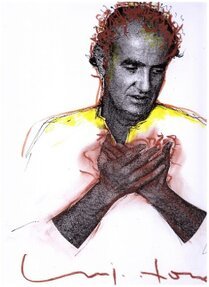

Alcuni scritti e testi critici:
Claudio Strinati - Dirigente Generale dei Beni e delle Attività Culturali - Ex Sovrintendente Speciale per il Polo Museale di Roma
Danilo Ciaramaglia è artista ricchissimo di una dimensione immaginativa forte e tumultuosa in cui riversa una sua personalissima iconografia che sembra estratta dal profondo dell'inconscio e che scatena sullo spazio della pittura un universo complesso e affascinante. Difficile trovare, per una esperienza come quella del giovane maestro, un riferimento esatto in un passato vicino o remoto. Certo si nota in lui una forma peculiare di surrealismo ma non si potrebbe indicare un vero e proprio precedente tanto la sua fantasia è personale e il suo stile estremamente nuovo e inatteso. C'è in lui una certa idea di una genesi continua delle forme le une dalle altre, in cui la dimensione onirica incombe con energia che sembra come trattenuta ma che grava con una forza conturbante. La creatività del Ciaramaglia è esuberante, frutto forse di una attitudine poderosa che lo rende molto interessante nel panorama dell'arte italiana contemporanea. Le opere più recenti denotano una cospicua apertura di orizzonte verso un universo di simboli e segni che promanano da un evidente capacità realistica ma che sono nel contempo completamente estranei a qualunque ipotesi di verosimiglianza, il che rende l'artista di fatto lontano dal Surrealismo storico per collocarlo, invece in un orizzonte di nuove figurazioni senza che sia possibile, però, inserirlo in nessuna delle tante correnti neofigurative che sono dilagate nell'ultimo ventennio nel nostro Paese. La sua, al momento, appare come una figura isolata e autorevole, tale da far intravedere possibili sviluppi futuri ancor più ardui e perentori che non mancheranno di definire al meglio un artista che ha, da subito, assunto un carattere notevole in questo fecondo inizio di millennio.......
Roberto Gnozzi - Docente, Fotografo, Scultore, aiuto scenografo e attore non protagonista nella Salomè dell'amico Carmelo Bene
"Un giorno come un'altro"
La mattina nei primissimi anni novanta, entravo nella grande aula chiamata Colleoni. Sentivo con l'olfatto la presenza degli studenti coreani, grandi consumatori di aglio. Guardavo il grande cavallo bianco che occupava gran parte dell'aula. Dal finestrone sporco, penzolavano da decenni luride tende. Decine di cavalletti sporchi di gesso, un brusio come una cantilena degli studenti che solo a Roma si sentiva, non era una stanza muta. Il volto pallido di Danilo che paziente attendeva sorridente il consumo di un'altro giorno....
Vanni Tiozzo - Restauratore dei Beni Culturali (MIBACT). Cattedre di: Restauro dell'arte contemporanea, Tecniche della pittura e Restauro per la pittura, all' Accademia di Belle Arti di Venezia
Artista ed amico, Danilo Ciaramaglia si rivela presto sorpresa accattivante, personalità attenta, precisa, ordinata, ma mai ordinaria, sapendo trasmettere, con discrezione, idee fantastiche. Le visioni che Danilo offre a chi gli presta attenzione sono dense, imperniate sul riferimento umano ma mai appiattite nella consuetudine. Difficile intravedere nelle immagini del mio amico richiami od appoggi ad esperienze artistiche del recente passato, tuttavia non sono mai ingenue, mai ignoranti. L'umanità è per lui un richiamo irresistibile, forte, sentito, onestamente palesato ma mai scontato e convenzionale. Il rapporto umano è per lui il fulcro di un percorso che non si conclude mai in sé stesso in quanto pretesto per ampliamenti che arricchiscono ed approfondiscono la visione iniziale. L'elaborazione mentale che egli presenta è testimonianza di vivacità espressiva, è perseguimento di comprensibilità che non si racchiude nelle convenzioni e che si propone come autentica propensione al dialogo. Un dialogo dinamico è la sua tensione come uomo e come artista, un compendio di ragione e fantasia che lui tende ad elaborare con intriganti richiami antropologici. Culture lontane, nel tempo e nello spazio, si palesano tra le evoluzioni fantasiose che egli propone nelle sue immagini. Forme surreali si articolano nel linguaggio di Danilo in equilibrio tra razionalità e fantasia, un equilibrio che non è statico ma sempre coerente, soprattutto, sincero.......
Manlio Sgalambro - Filosofo, Scrittore, autore della "Cura"e dell'Opera in due atti il Cavaliere dell'Intelletto con musiche di Franco Battiato
La riflessione prende il suo tempo. Sensazioni ed emozioni aspettano, per così dire il loro momento. Insomma se lo spirito soffia e va dove vuole bisogna attenderlo. Così solo ora posso dirle le impressioni coagulatesi attorno alle sue immagini. Ciò che noto è una combinazione soavissima di immaginazione e intelletto. Ho qui da guardare "L'Inseminatore". Ho detto poco fa combinazione di intelletto e immaginazione, è bene distinguere (entrambi lo facciamo, lei nel suo opus, io nella mia riflessione) tra immaginazione e fantasia. L'immaginazione origina dall'intelletto, la sua può sembrare una figura geometrica o artistica, voglio forse accusarla di intellettualismo? Al contrario per questo uso dell'intelletto io l'approvo e l'apprezzo.......
Enrica Frediani - Curatrice d'arte
Egr.prof.Ciaramaglia,
La ringrazio per la sua adesione, è un onore per noi averla partecipe alla VIII edizione della Rassegna.
La ringrazio anche per le belle parole genuine e sentite che ha rivolto a questa iniziativa e al nostro lavoro. Parole che mi hanno "intenerita" per la sincerità e riflessioni con cui sono state esposte. Grazie.
Desidero rivolgerle anche un personale ringraziamento per la poesia inviata: tenera, toccante, struggente e... commovente. Uno degli aspetti piacevoli di questo lavoro sono gli arricchimenti spirituali e culturali che ne derivano.......
Marco Tosa - Cattedra di: Tecnologia del marmo e delle pietre dure all' Accademia di Belle Arti di Venezia. Curatore unico del Museo della Bambola e del Giocattolo, Rocca Borromeo di Angera, Varese. Curatore unico del Museo della Bambola, collezione Marie Paule Vedrine - Andolfatto, Palazzo Felicini, Bologna
Disegnare forme con inchiostro scuro su immacolate pagine: ecco il gesto provocatorio opposto al bianco evocatore di luce pura. Mi colpisce particolarmente questo nel lavoro pittorico di Danilo Ciaramaglia, la parte grafica che evita colore e compromessi rimanendo identitaria e scarna grazie alla sua filiforme narrazione, consentita solo dal segno essenziale. Gli universi raccontati con immagini in queste opere sono narrazioni di mondi ultraterreni, dove un certo femminile, a volte fortemente erotico, convive con le immagini arcane di culture antiche, tradotte e riproposte anche in terracotta, policromata e non, istintivamente modellata in forme libere che non trascurano anche citazioni archeologiche. Oltre, si viaggia tra donne manichino, elaborate in digitale, dai volti cloni perfetti, senza segni di tempo, età, lontane dal disfacimento della carne verso una visione plastica di corpi ripetitivi, quasi fossero prodotti futuribili di questa attuale società disumana e assillata dal perfezionismo esteriore a scapito del vuoto interiore divorante. Solitudini forti, accentuate dalle sonorità elettroniche inaspettate, spesso spaesanti, catturano così l’occhio dell’osservatore nel particolare ripetuto specularmente, facendolo riflettere sulla fredda lucentezza della superficie. Ma la forma del racconto diventa più intrigante nei disegni a china, nelle incisioni, perdendo la perfezione tecnica del computer e della fotografia in favore della manualità che riprende protagonismo addentrandosi in racconti fiabeschi: sotto spoglie accattivanti nascondono intensità e visioni che turbano in profondità. Il viaggio che questo lavoro artistico propone all’osservatore non è tranquillizzante, affine alla contemporaneità della quale evidenzia contrasti stridenti, ammiccante verso universi differenti non migliori o peggiori del nostro attuale. Nell’occhio di chi guarda ci sono spesso risposte inevase.
Nicola Cisternino - Cattedre di: Storia della musica contemporanea e Storia della musica e del teatro musicale, Accademia di Belle Arti di Venezia. Compositore, Curatore assieme a Pierre Albert Castanet, del volume "Giacinto Scelsi Viaggio al centro del suono" ideando e dirigendo iniziative scelsiane su richiesta di Franco Battiato

Danilo carissimo
che gioia il tuo invito e che vertigine l'immersione nella tua opera così complessa e lirica al tempo stesso. Poche parole, forse troppo ermetiche (ma questo a entrambi ci è dato), ma al caldo delle energie sottili, altro che bizantinismi...Posso, ma su ben altri piani, ricambiare solo con dei miei graffi grafici su un'immagine di Nono, a cui sto lavorando come possibile copertina del mio libro sul maestro, un abbraccio forte, ringraziandoti, del dono della tua amicizia e stima.
Nicola
Nicola
TRACCE METAFONICHE
Vertiginoso è l’approccio all’intero universo creativo di Danilo, homo prima del nome e umano prima della stessa mano che è cosa mirabile, in molte opere; stupefacente nel doppio senso dello stupor che releghiamo alla sola sfera infante e di alterazione transreale. La discesa ipnagogica si affida, in molti casi, al veicolo metafonico, capsule animiche che permettono al viaggiatore astrale di essere consistente, fluidamente condensato e al tempo stesso di permettersi un sì rischioso viaggio arcaico nei grumi dell’Intelletto come rileva genialmente il sulfureo Sgalambro al cospetto delle opere di Danilo, e al tempo stesso una candida fusione matericoanimicoplastica pienamente lirica e cantata come nel suo verso:
Dolce crisalide coperta
Vertiginoso è l’approccio all’intero universo creativo di Danilo, homo prima del nome e umano prima della stessa mano che è cosa mirabile, in molte opere; stupefacente nel doppio senso dello stupor che releghiamo alla sola sfera infante e di alterazione transreale. La discesa ipnagogica si affida, in molti casi, al veicolo metafonico, capsule animiche che permettono al viaggiatore astrale di essere consistente, fluidamente condensato e al tempo stesso di permettersi un sì rischioso viaggio arcaico nei grumi dell’Intelletto come rileva genialmente il sulfureo Sgalambro al cospetto delle opere di Danilo, e al tempo stesso una candida fusione matericoanimicoplastica pienamente lirica e cantata come nel suo verso:
Dolce crisalide coperta
stadio intermedio,
il buio permette la fusione….
Siamo suono alla ricerca del suo canto o vocazione, Amor che move il sole e l'altre stelle canterebbe il Sommo, come molte opere di Danilo rimandano, in primis le terrecotte colme del graffio u-mano nella terra, a quegli Antenati oscuri, a quel viaggio mitico, sulle Vie dei Canti che l’amato ab-origeno che è in noi ci sussurra, iniziandoci ritualmente, dal dì al tramonto, perennemente, prima di abbracciarci e devachanicamente sospenderci sulla soglia del riposo notturno e del sogno. Soglia dell’attesa e del passaggio vivificata dalle Deità terrifiche che Danilo, da sapiente e mirabile maestro d‘arte medianica, tiene a bada per noi, mostrandocele e incantandole, per proteggerci nel mitico e perenne Tempo del Sogno (e del Canto) pronti all’incontro ultimo e primo.
il buio permette la fusione….
Siamo suono alla ricerca del suo canto o vocazione, Amor che move il sole e l'altre stelle canterebbe il Sommo, come molte opere di Danilo rimandano, in primis le terrecotte colme del graffio u-mano nella terra, a quegli Antenati oscuri, a quel viaggio mitico, sulle Vie dei Canti che l’amato ab-origeno che è in noi ci sussurra, iniziandoci ritualmente, dal dì al tramonto, perennemente, prima di abbracciarci e devachanicamente sospenderci sulla soglia del riposo notturno e del sogno. Soglia dell’attesa e del passaggio vivificata dalle Deità terrifiche che Danilo, da sapiente e mirabile maestro d‘arte medianica, tiene a bada per noi, mostrandocele e incantandole, per proteggerci nel mitico e perenne Tempo del Sogno (e del Canto) pronti all’incontro ultimo e primo.
Il Silenzio perduto
Silenzio puose a quella dolce lira
E fece quietar le sante corde
Che la destra del cielo
Allenta e tira
(Dante, Paradiso XV, 4-6)
Il silenzio.
È molto difficile da ascoltare.
Molto difficile ascoltare, nel silenzio, gli altri.
Luigi Nono (1983)*
Silenzio, tra Tacet e Silere nella doppia coniugazione latina che indica una sottile polarità magnetica tra il Silenzio-Tacet imposto, di ‘pressione’ e costrizione, incombente e minaccioso e il Silenzio-Silere, contemplativo e scelto. Se il Tacet è vettorialmente dominato dall’istinto dionisiaco, orgiastico e vitale, il Silere si apre alla curvatura apollinea della contemplazione e dell’Ascolto. Se il Tacet co-stringe alla tensione lineare dell’agire, tra causa ed effetto, il Silere dilata alla curvatura dell’Ascolto, della contemplazione e ri-flessione (doppia flessione) verso l’altro. All’apparenza una dualità oppositiva che invece in quanto polarità ‘magnetica’ delimita un Campo dell’esperienza umana attraverso l’orecchio (dimensione aurale), che vede la Linea allentarsi nella Curva e viceversa in una oscillazione ‘elastica’ del Campo, quel Synthonos o ‘accordatura’ che permette una continua mobilità dello Spazio (il Suono Mobile così cercato da Luigi Nono) alla ricerca di quella Sintonia perduta che abitiamo con tutte le nostre inquietudini, conflitti e increspature di superficie, di cui è piena la quotidianità. Con la Vergine del Silenzio di Danilo Ciaramaglia un mantello-grembo ci accoglie nel suo abbraccio ed è un invito e un ri-chiamo (doppia chiamata) al rientro in questo Campo di Ascolto, una doppia chiamata, questa sì materna, al Metodo e alla guida (indicato dall’indice arpocratico) nell’ascolto introiettivo del Sé e della calma interiore, per scoprire ad antenne alzate sulla soglia del suono e della luce l’Ascolto degli Altri, l’incontro epifanico della piccola mano sporgente del Cristo fatto Uomo, u-mano fra gli u-mani, profonda Unione mistica degli umani.
Orazio Ruggieri - Scrittore, giornalista del quotidiano "Il Tempo"
La sua è una visione poetica approfondita dalle passioni e dai ricordi, di un mondo fatto di elementi tratti dall'archeologia della memoria e del reale che ci circonda. L'artista propone il suo rifugio in un onirico e non esangue olimpo in cui dimorano personaggi e simboli di un lontano passato. La sua espressione pittorica della drammaticità e del mito è intesa come urlo per le cose perdute. La sua scultura ricorda antichi apparati di carne e di ossa rimontati da una profonda energia spirituale, nel lavoro esiste ricerca, la ricerca è vita. "La Creazione ermetica", qui i tessuti morti riprendono a vivere le fibre si ricompongono in un ordine perpetuo, l'anima della strana creatura ermafrodita materializza nella creta un'entità medianica. "La sfinge galattica", nel legno il sacrario contenente il seme divino della nascita, nella fisionomia ricercata un monumento destinato all'Universo. L'idolo peruviano veglia l'antica morte, il feto riporta in noi la terrestre speranza. "L'anima nelle sculture di Pasqua", esse vivono. L'Ilmana energia vitale, irrompe nella materia sgretolandola, escono i crani arsi dal sole, la creta si torce su sé stessa definendo nello spazio forme ectoplasmatiche "Provengo da lontano", nell'ulivo una presenza non di questo mondo, e l'idolo di Marte", sacra rappresentazione di una divinità umanoide con precise caratteristiche riferite alle culture precolombiane, e al Dio Hitocotonusi giapponese del periodo Jomon. Nel giovane artista Danilo Ciaramaglia emerge lo stimolo vitale di chi vuol proseguire il lungo cammino, nella sua coscienza si concretizzano i fenomeni artistici.
Cesare Vivaldi - Poeta, Critico d'arte, traduttore italiano
Cara Giulia, ieri in Accademia, dopo la lezione, mi è venuto incontro un discente con occhi vispi. L'ho invitato a casa e abbiamo conversato. Ho immediatamente notato in lui umiltà e una cultura espressa, inaspettata per un giovane della sua età. Mi ha mostrato il suo Opus, acerbo, ambizioso ma umano, destando notevolmente la mia curiosità. Se saprà mantenere il suo assetto nel tempo e credo lo farà, non mancherà di stupirci. Sarei contento se dessi uno sguardo alla sua fresca produzione e mi esprimessi il tuo parere, potrebbe benissimo esporre nella tua splendida galleria di Roma con un mio testo. Attendo notizie
Tuo Cesare
Orazio Ruggieri - Scrittore, giornalista del quotidiano "Il Tempo"
"Nei grandi avvenimenti che hanno permesso l'evoluzione umana, non esistono testimonianze evidenti più di quelle artistiche. L'uomo ha avuto sempre il bisogno di esprimere sé stesso nel colore, nelle forme plastiche e nella grafica incisa, non solo per testimoniare la sua esistenza o per esorcizzare le sue paure, i drammi la morte. Egli con l'arte vuole coinvolgerci nella nostra sensibilità. Queste e altre riflessioni sono nate in me osservando le sculture e alcuni quadri di Danilo Ciaramaglia. Nel suo mondo ermetico che appartiene all'antico, traspare il cosmo e le simbologie tracciate dalle grandi civiltà del passato, Il mito s'incontra e si fonde con la sensibilità costante di un giovane artista forte e deciso, capace di trasmettere attraverso le sue sculture cosi espressive e misteriose, un grande senso dell'assurdo. Nel suo lavoro pittorico e scultoreo emerge il lato tecnico che è notevole, prepara le tele alla maniera antica come diceva Cennini, tratta i pennelli, cuoce le sculture da solo come un artigiano, ha osservato con attenzione le superfici scultoree dei grandi artisti del passato, ama il classico, il moderno e il contemporaneo. Ma la sua grande abilità è quella di proiettare l'antico nella sua epoca in un gioco che unisce cultura, professionalità e mestiere, all'insegna di un nuovo mondo cosmico".
Alessandro Gelli - Storico e custode della memoria del padre il maestro Lelio Gelli, Scultore, allievo di Libero Andreotti
Dedica scritta a matita dietro la litografia storica degli anni 60 di Lelio Gelli:
A Danilo, che attraverso il suo maestro Vincenzo accoglie nella sua vocazione di scultore l’eco dell’insegnamento di Lelio Gelli, doniamo questa litografia che riprende liberamente un disegno del 1924, con gli auguri per lui e la sua sposa.
A Danilo, che attraverso il suo maestro Vincenzo accoglie nella sua vocazione di scultore l’eco dell’insegnamento di Lelio Gelli, doniamo questa litografia che riprende liberamente un disegno del 1924, con gli auguri per lui e la sua sposa.
Latina, 29/10/2004.
Paolo Guiotto - Artista
Durante la visita della mostra di Fabrizio Clerici tenutasi presso il Complesso del Vittoriano, Roma 14/29 febbraio 2004. A cura di Claudio Strinati e Maria Teresa Benedetti:
“Danilo con la sua sensibilità osserva quei particolari fulminanti di Fabrizio, prova a percepire la regia sapiente dell’utilizzo della matita, della pittura a olio, immagina la sua mano volteggiare sulla tela e accarezzare le forme. Avendolo conosciuto e frequentato nel periodo romano, gli avrebbe fatto immensamente piacere conoscerlo, aveva sottigliezze affini alle sue…”
Renzo Bertoni - Critico d'arte, Scrittore
Danilo Ciaramaglia (sculture e acrilici) le divinità e i miti così ricchi di umori individuali e inseriti in un gioco che vuole, e sa, conservare un suo particolare, inconfondibile umore, e sapore narrativo....
Laura Gensini - Critica d'arte, Curatrice d'arte
Mitologie lontane quelle di Danilo Ciaramaglia, in immagini scorporate, dalle fantastiche sproporzioni, segnate da morsure sapienti....
Valentino Compassi - Scrittore, Saggista
Carissimo signor Ciaramaglia
Dopo il nostro piacevole incontro a Roma non mi ha dimenticato, sono onorato e la ringrazio. Ho gradito moltissimo le sue parole che sono lo specchio di un'esistenza che si srotola in giuste dimensioni di un giusto Universo. Ed ho anche gradito le foto delle sue bellissime Opere che esprimono una totale sicurezza di confini ormai raggiunti e di nuovi orizzonti distanti anni luce da concettucoli di ominidi appesantiti da enormi paraocchi. Spero di rivederla presto, forse in occasione di una sua mostra o di un mio seminario. Non si fermi, continui......
Luisiana Norandini - Docente-Referente Inclusione, Liceo Artistico Statale di Treviso
Buon pomeriggio professor Ciaramaglia.
Sono Luisiana Norandini, docente di sostegno del Liceo Artistico di Treviso. Sono stata l'insegnante di sostegno di Luca per 4 anni e ieri, con grandissima gioia, ho appreso della sua laurea. La madre mi ha parlato benissimo di Lei, di quanto abbia contribuito alla riuscita del percorso accademico di Luca. Volevo farLe i miei complimenti per questo, per la sensibilità che ha dimostrato nei confronti di Luca, per la mano che gli ha saputo tendere. Mi perdoni se mi sono permessa di usare la mail istituzionale per contattarLa, ma mi sentivo di doverLa ringraziare.
Da una studentessa
Gentile professor Ciaramaglia sarebbe per me un onore se Lei potesse essere uno dei miei referenti per il corso di laurea magistrale in Visual Communication nel Regno Unito. Non so se si ricorda di me, all'Università amavo la sua pazienza e la sua responsabilità, lei era uno dei miei insegnanti preferiti, ho studiato con lei nell'A.A.2023/2024 ottenendo il voto di 30/30 e acquisendo conoscenze preziose. Mi piacevano molto le sue lezioni, ricordo che mi elogiava, non avevo molta fiducia in me stessa a quel tempo, il suo incoraggiamento mi rendeva felice e mi motivava a studiare...
Da una studentessa
Professore, volevo ringraziarla per questo semestre e il tempo trascorso nel suo laboratorio, ho potuto scoprire la Scuola, ho vissuto momenti meravigliosi e ho imparato molto durante le sue lezioni. Riparto con una bellissima esperienza e tante conoscenze in più sull'arte e la pratica artistica della ceroplastica. Grazie ancora di tutto, le auguro il meglio per il futuro.
Cordiali saluti Darine B.
Da uno studente
La ringrazio sentitamente per quest'anno così ricco di stimoli e spunti interessanti. Mi auguro che continui ancora a lungo a insegnare, perchè, a mio avviso, i giovani di oggi hanno un grande bisogno di docenti come Lei.
Cordiali saluti, Francesco.